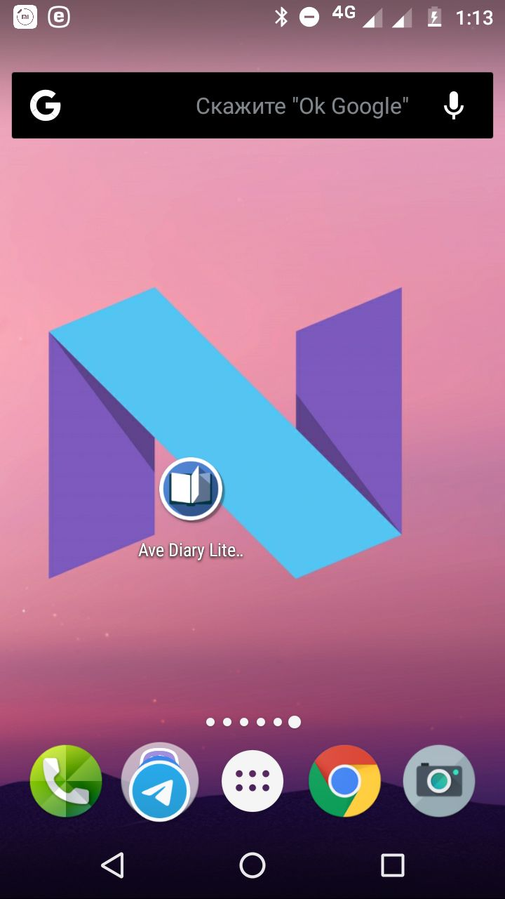
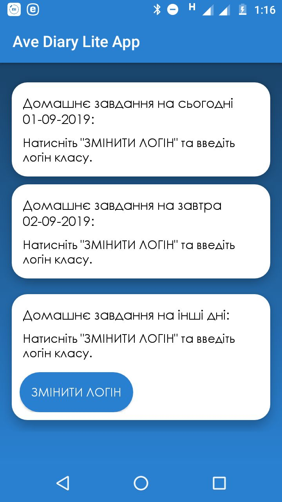
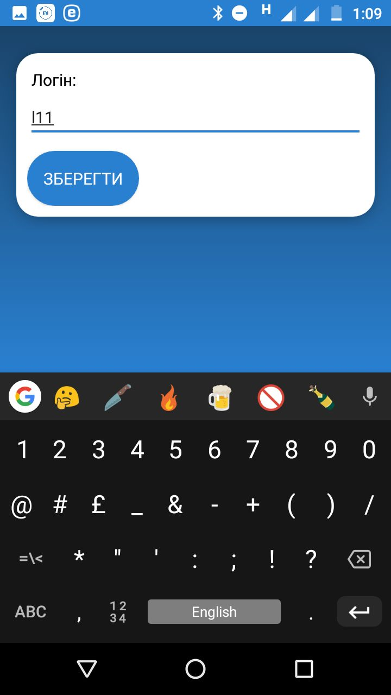
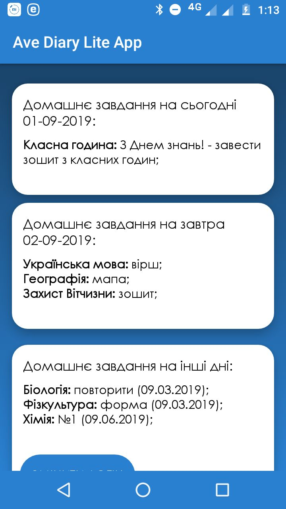

Ave Diary Lite App
Ave Diary Lite App Ave Diary Bot Telegram
Ave Diary Bot TelegramAve Diary Lite App
Ave Diary Lite App – Android приложение благодаря которому ученики могут узнать домашнее задание через логин класса.
Сначала ученику необходимо установить .apk файл. После этого ученик должен открыть приложение.


Нужно нажать кнопку «Змінити логін» и ввести логин класса.

После этого нужно нажать на кнопку «Зберегти», а затем "Назад". Теперь ученик может смотреть домашнее задание просто нажав на иконку приложения!
